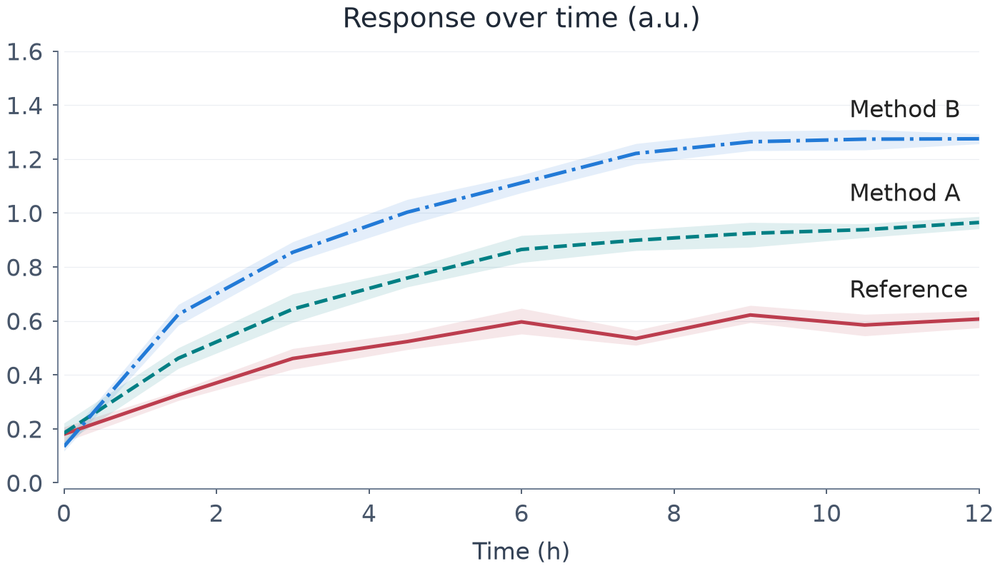
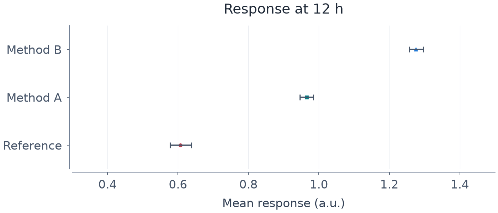

Two questions, two charts
Independent synthetic observations, not experimental results. Desktop charts are shown at 700px; a separate 320px layout is used on narrow screens. Neither is independently rated for readability yet.


Endpoint values (3 decimals)
| Method | Mean | 95% CI |
|---|---|---|
| Method B | 1.275 | 1.257–1.296 |
| Method A | 0.965 | 0.946–0.984 |
| Reference | 0.607 | 0.577–0.638 |
Reading tasks — independent review pending
- Which method has the highest mean at 12 h?
- Approximately what is the Reference mean at 12 h?
- Does the shading show observation spread or uncertainty in a mean?
For a reader study, record answer accuracy and reading time. No reader study or model grading has been run. Automated checks do not certify aesthetic quality or accessibility.
The illustrative bootstrap uses 399 resamples with seed 17. See the criteria and limitations, 한국어 설명, and the measured QA report.